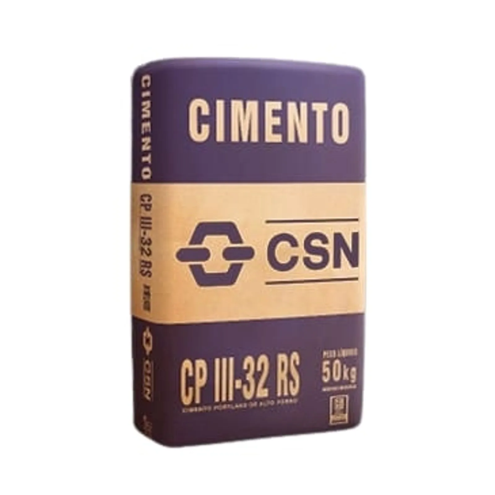
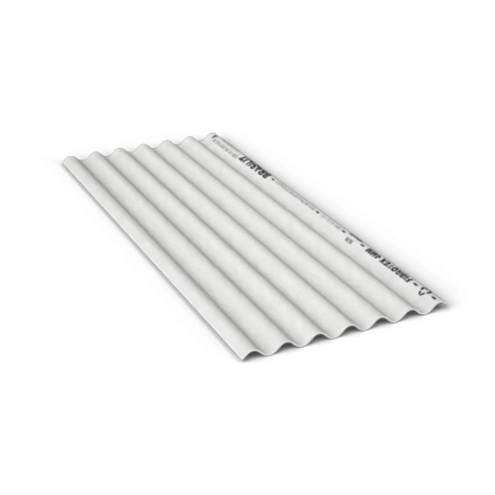
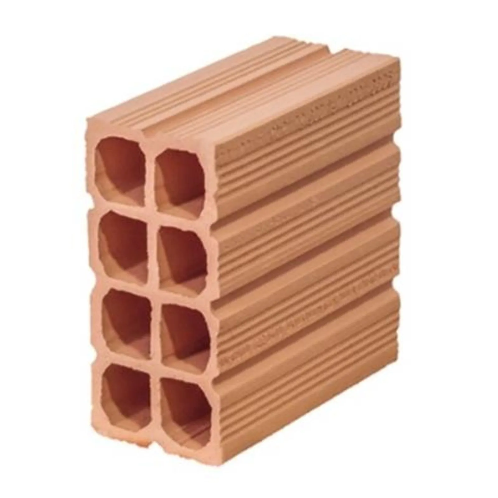
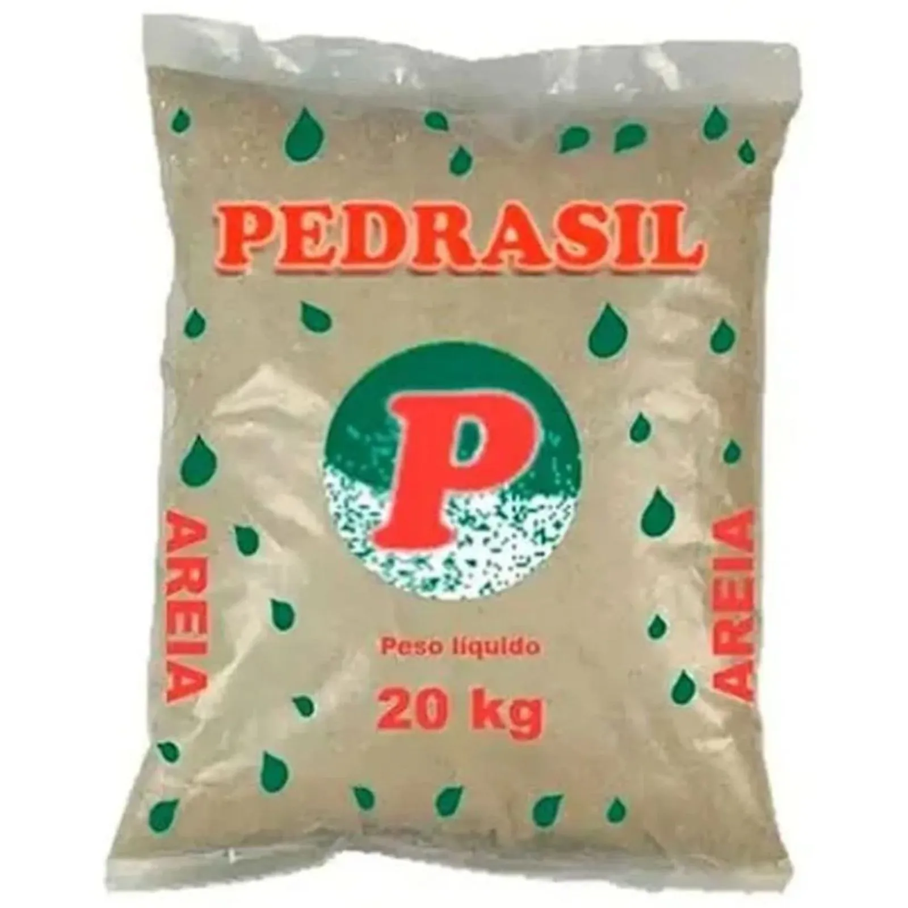
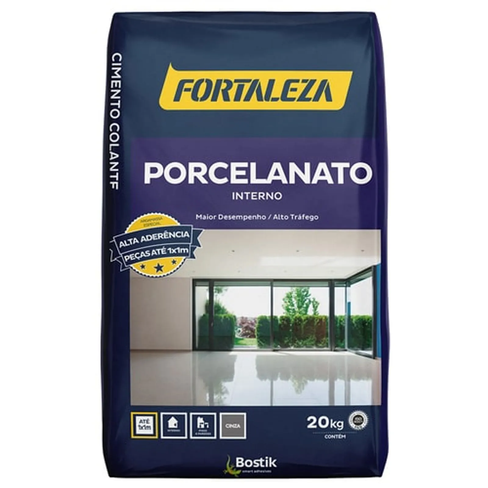
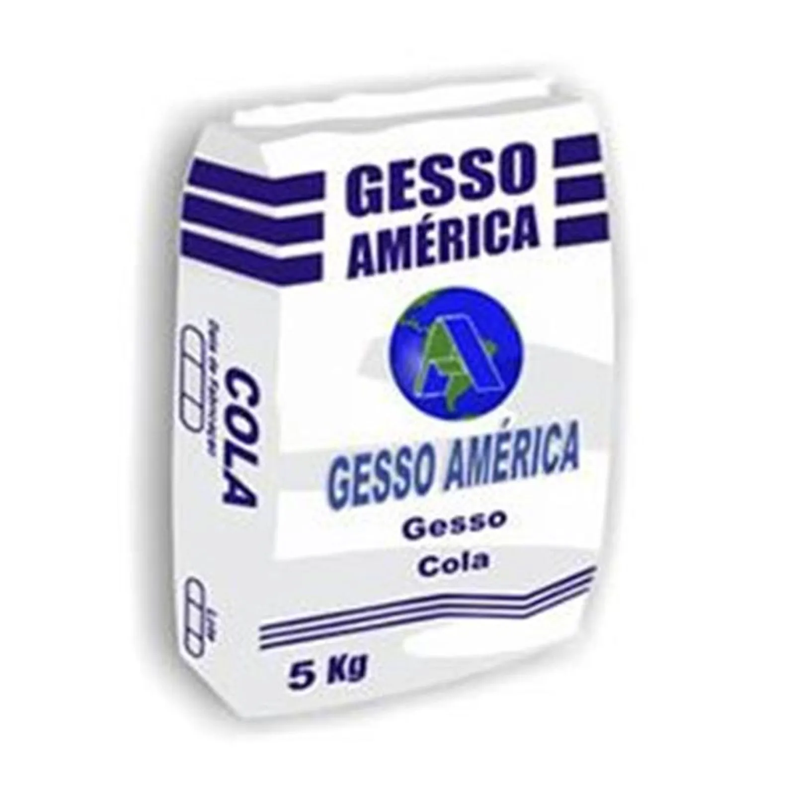

Para sua Construção

Cimento CPIII-32 RS 50Kg CSN
R$ 27,95/un

Telha Ondulada Cimentícia Cinza
R$ 49,90/un

Bloco Cerâmico de Vedação Baianinho
R$ 0,90/un

Areia Média 20Kg Pedrasil
R$ 4,93/un

Argamassa Interna Porcelanato Cinza
R$ 21,90
